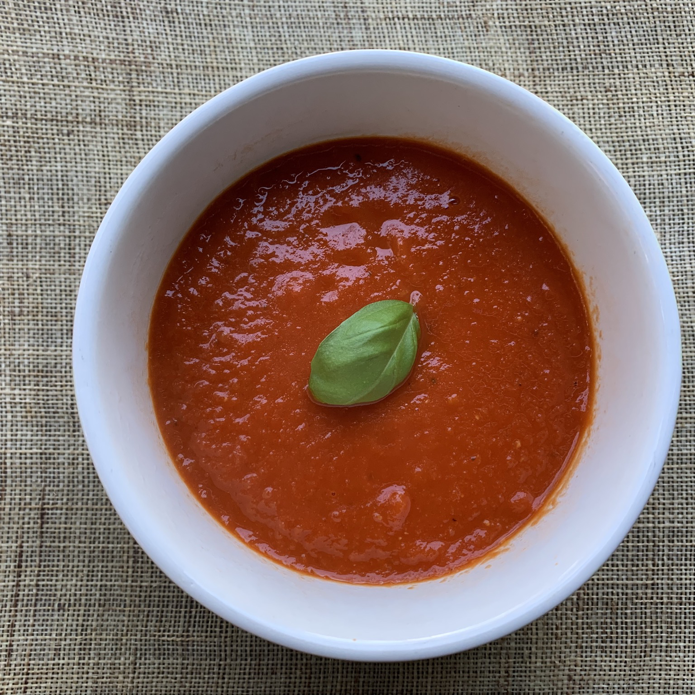

Tomato Soup

The recipe to make Easy and Delicious tomato soup!
This Tomato Soup is rich with a velvety texture. It’s easy to make with canned tomatoes, and perfectly suited for all of your grilled cheese dipping needs.
Tomato soup and grilled cheese sandwiches are best when the air turns crisp, the mornings are damp, and the days are short. The soup’s simplicity only accentuates its role as a tincture on a cold fall evening. Its velvety texture is a robe of warmth.
Ingredients:
- 1 tablespoon unsalted butter
- 1 tablespoon olive oil
- 1 onion, thinly sliced
- 2 large garlic cloves, peeled and crushed
- 2 (28 ounce) cans whole peeled tomatoes
- 1 cup water
- 1 tablespoon sugar
- 1 teaspoon salt, plus more to taste
- freshly ground black pepper to taste
- 1 pinch red pepper flakes
- ¼ teaspoon celery seed
- ¼ teaspoon dried oregano
Directions:
-
Heat butter and olive oil in a large saucepan over medium-low heat and cook onion and garlic until onion is soft and translucent, about 5 minutes. Add tomatoes, water, sugar, salt, pepper, red pepper flakes, celery seed, and oregano. Bring to a boil. Reduce heat, cover, and simmer for 15 minutes.
-
Remove from heat and puree with an immersion blender. Reheat soup until warm and season with more salt and pepper if desired.